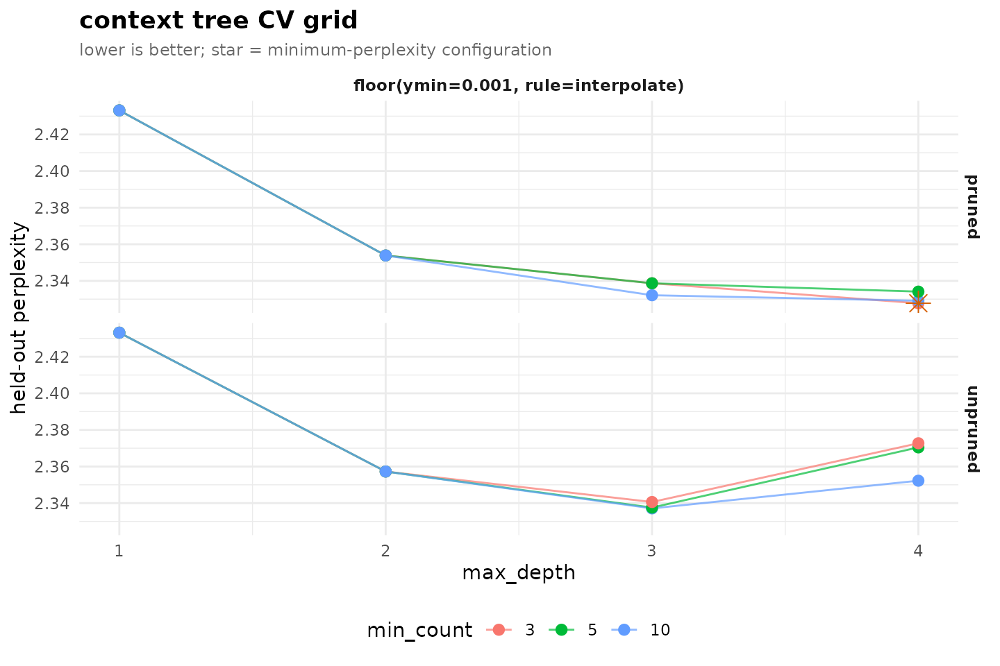

Model selection: tuning, fit and perplexity
Written by Mohammed Saqr and Sonsoles López-Pernas
Source:vignettes/articles/model-selection.Rmd
model-selection.RmdA prediction suffix tree is defined by four choices made before
estimation: the longest history it may hold (max_depth),
the number of observations a context needs to receive its own node
(min_count), the smoother, and whether and how the tree is
pruned. Each choice trades the detail of the model against the precision
of its estimates. A deeper tree with a lower min_count
describes the data it was fitted on more closely, but its longer
contexts rest on fewer observations and may describe noise that does not
recur (Bühlmann & Wyner, 1999). The question for selection is
therefore not how well a tree fits its own data, which always improves
with depth, but how well it predicts sequences it has not seen.
This guide describes the measures of fit that
transitiontrees reports: the log likelihood and the
information criteria derived from it, and perplexity, in sample and on
held-out data. It then selects the configuration by k-fold
cross-validation with tune_tree() and examines how stable
the selection is. The smoothers and pruning criteria among which the
selection chooses are described in smoothing and pruning.
Data
The examples use trajectories, the engagement states of
138 learners over 15 time steps; the data are small enough for every
grid below to run in seconds.
- Sequence: each row is one learner, read from left to right; two rows contain no observed state, which leaves 136 sequences and 1,870 observed states.
-
States:
Active,AverageandDisengaged. -
Missing cells: trailing
NAs mark the end of a learner’s record and are dropped.
Likelihood and information criteria
For a sequence , the tree predicts each state from the longest context in the tree that ends the history before it. The log likelihood of a set of sequences is the sum over all predicted positions,
and the tree has free parameters, one distribution over states for each of its contexts. The standard generics return these quantities.
tree <- context_tree(trajectories, max_depth = 4, min_count = 5)
logLik(tree)
#> 'log Lik.' -1438 (df=164)
nobs(tree)
#> [1] 1870
AIC(tree)
#> [1] 3204
BIC(tree)
#> [1] 4111The depth-4 tree has 82 contexts and therefore
parameters, estimated from 1,870 observations. With
predicted states,
and
.
model_fit() returns all of them in one row, together with
perplexity,
the effective number of equally likely next states: it is for a uniform guess and 1 for perfect prediction.
model_fit(tree)
#> logLik df nobs AIC BIC perplexity
#> 1 -1438 164 1870 3204 4111 2.16Comparing candidate trees in sample
Three candidates illustrate the information criteria: a first-order chain (depth 1), the depth-4 tree, and the depth-4 tree pruned with the G2 criterion.
first_order <- context_tree(trajectories, max_depth = 1, min_count = 5)
pruned <- prune_tree(tree, criterion = "G2", alpha = 0.05)
rbind(first_order = model_fit(first_order),
depth_4 = model_fit(tree),
pruned = model_fit(pruned))
#> logLik df nobs AIC BIC perplexity
#> first_order -1645 8 1870 3306 3350 2.41
#> depth_4 -1438 164 1870 3204 4111 2.16
#> pruned -1507 50 1870 3115 3392 2.24The depth-4 tree has the highest likelihood and the lowest in-sample perplexity (2.16), as the model with the most parameters does on the data it was fitted on. AIC penalizes each parameter by 2 and prefers the pruned tree (3115), which reaches a perplexity of 2.24 with 50 parameters. BIC penalizes each parameter by and prefers the first-order chain with 8 parameters (3350), followed by the pruned tree (3392). The two criteria disagree about whether memory beyond the current state is worth its parameters, and neither measures predictive accuracy directly.
Perplexity on held-out sequences
The information criteria approximate predictive accuracy; held-out
data measure it. With newdata, perplexity()
and model_fit() score sequences that were not used for
fitting. Here the tree is fitted on the first 100 learners and scored on
the remaining 38.
training <- head(trajectories, 100)
test <- tail(trajectories, 38)
deep <- context_tree(training, max_depth = 4, min_count = 5)
rbind(in_sample = model_fit(deep),
held_out = model_fit(deep, newdata = test))
#> logLik df nobs AIC BIC perplexity
#> in_sample -1058 150 1374 2415 3199 2.16
#> held_out -404 150 496 1108 1739 2.26The deep tree predicts its own sequences with a perplexity of 2.16 and the held-out sequences with 2.26. On held-out data, AIC and BIC are computed from the held-out log likelihood with the parameters of the fitted tree. The same comparison for the pruned tree:
c(in_sample = perplexity(prune_tree(deep)),
held_out = perplexity(prune_tree(deep), newdata = test))
#> in_sample held_out
#> 2.23 2.38In this split, pruning raises both: the in-sample perplexity to 2.23 and the held-out perplexity to 2.38, against 2.26 for the unpruned tree. With 100 training sequences, the G2 test removes contexts that would have predicted the 38 test learners well. A single split of 136 sequences is one noisy sample of predictive accuracy, and its verdict depends on which learners fall on each side; cross-validation averages over many splits.
Cross-validated tuning
tune_tree() divides the sequences at random into
folds groups, fits each configuration on all groups but
one, and scores the held-out group; every sequence is held out once.
Splitting by sequence rather than by position keeps the positions of one
sequence, which are dependent, on the same side of the split. The
held-out log likelihoods are summed over folds, and the configuration
with the lowest pooled perplexity is selected among those that scored on
every fold. The grid below crosses four depths, three values of
min_count, and pruned and unpruned trees: 24
configurations.
grid <- tune_tree(trajectories, max_depth = 1:4, min_count = c(3, 5, 10),
prune = c(FALSE, TRUE), folds = 5, seed = 1)
summary(grid)
#> <transitiontrees_tune summary> 24 configurations, 0 with a failed fold
#> selected (minimum held-out perplexity):
#> max_depth min_count smoothing prune perplexity n_nodes_avg
#> 4 3 floor(ymin=0.001, rule=interpolate) TRUE 2.328 26.4The selected configuration is a pruned tree of depth 4 with
min_count = 3, with a held-out perplexity of 2.33 and on
average 26 contexts. The full grid, sorted by held-out perplexity:
head(as.data.frame(grid, what = "grid"), 10)
#> max_depth min_count smoothing prune logLik n_scored
#> 1 4 3 floor(ymin=0.001, rule=interpolate) TRUE -1580 1870
#> 2 4 10 floor(ymin=0.001, rule=interpolate) TRUE -1581 1870
#> 3 3 10 floor(ymin=0.001, rule=interpolate) TRUE -1583 1870
#> 4 4 5 floor(ymin=0.001, rule=interpolate) TRUE -1585 1870
#> 5 3 10 floor(ymin=0.001, rule=interpolate) FALSE -1587 1870
#> 6 3 5 floor(ymin=0.001, rule=interpolate) FALSE -1588 1870
#> 7 3 3 floor(ymin=0.001, rule=interpolate) TRUE -1589 1870
#> 8 3 5 floor(ymin=0.001, rule=interpolate) TRUE -1589 1870
#> 9 3 3 floor(ymin=0.001, rule=interpolate) FALSE -1590 1870
#> 10 4 10 floor(ymin=0.001, rule=interpolate) FALSE -1600 1870
#> perplexity n_nodes_avg folds_failed
#> 1 2.33 26.4 0
#> 2 2.33 24.2 0
#> 3 2.33 16.6 0
#> 4 2.33 25.4 0
#> 5 2.34 31.0 0
#> 6 2.34 37.2 0
#> 7 2.34 17.2 0
#> 8 2.34 17.2 0
#> 9 2.34 39.4 0
#> 10 2.35 60.4 0The ten best configurations lie between 2.33 and 2.35, and all of them use depth 3 or 4. The configurations of depth 1 and 2:
subset(as.data.frame(grid, what = "grid"), max_depth <= 2,
select = c(max_depth, min_count, prune, perplexity, n_nodes_avg))
#> max_depth min_count prune perplexity n_nodes_avg
#> 11 2 3 TRUE 2.35 11.6
#> 12 2 5 TRUE 2.35 11.6
#> 13 2 10 TRUE 2.35 11.6
#> 14 2 3 FALSE 2.36 13.0
#> 15 2 5 FALSE 2.36 13.0
#> 16 2 10 FALSE 2.36 13.0
#> 19 1 3 FALSE 2.43 4.0
#> 20 1 5 FALSE 2.43 4.0
#> 21 1 10 FALSE 2.43 4.0
#> 22 1 3 TRUE 2.43 4.0
#> 23 1 5 TRUE 2.43 4.0
#> 24 1 10 TRUE 2.43 4.0Every depth-1 configuration reaches 2.43 and every depth-2
configuration 2.35 or 2.36; at these depths min_count makes
no difference, because every context is observed more than ten times.
The plot shows the whole surface; the star marks the selected
configuration and is drawn in each panel at its depth and
perplexity.
plot(grid)
The large step is from one to two states of memory; from depth 2
onward the pruned trees change little, whereas the unpruned trees
deteriorate at depth 4 as their number of contexts grows. Pruning makes
the result insensitive to the depth limit, and min_count
matters only for unpruned trees.
Smoothers in the grid
smoothing takes a vector of smoother names, or a list of
specifications with parameters, and adds them to the grid.
smoothing_grid <- tune_tree(trajectories, max_depth = 2:4, min_count = 5,
smoothing = c("floor", "laplace", "kneser_ney",
"witten_bell"),
prune = TRUE, folds = 5, seed = 1)
as.data.frame(smoothing_grid, what = "grid")
#> max_depth min_count smoothing prune logLik n_scored
#> 1 4 5 kneser_ney(discount=0.75) TRUE -1570 1870
#> 2 4 5 witten_bell TRUE -1570 1870
#> 3 4 5 laplace(alpha=1) TRUE -1570 1870
#> 4 3 5 witten_bell TRUE -1584 1870
#> 5 3 5 laplace(alpha=1) TRUE -1585 1870
#> 6 4 5 floor(ymin=0.001, rule=interpolate) TRUE -1585 1870
#> 7 3 5 kneser_ney(discount=0.75) TRUE -1587 1870
#> 8 3 5 floor(ymin=0.001, rule=interpolate) TRUE -1589 1870
#> 9 2 5 witten_bell TRUE -1600 1870
#> 10 2 5 laplace(alpha=1) TRUE -1600 1870
#> 11 2 5 floor(ymin=0.001, rule=interpolate) TRUE -1601 1870
#> 12 2 5 kneser_ney(discount=0.75) TRUE -1602 1870
#> perplexity n_nodes_avg folds_failed
#> 1 2.32 25.8 0
#> 2 2.32 25.0 0
#> 3 2.32 26.0 0
#> 4 2.33 16.8 0
#> 5 2.33 16.6 0
#> 6 2.33 25.4 0
#> 7 2.34 17.0 0
#> 8 2.34 17.2 0
#> 9 2.35 11.6 0
#> 10 2.35 11.6 0
#> 11 2.35 11.6 0
#> 12 2.36 11.6 0
as.data.frame(smoothing_grid, what = "best")
#> max_depth min_count smoothing prune logLik n_scored perplexity
#> 1 4 5 kneser_ney(discount=0.75) TRUE -1570 1870 2.32
#> n_nodes_avg folds_failed
#> 1 25.8 0The smoothers differ by less than 0.01 in held-out perplexity at each depth; the lowest value, 2.32, is shared by Kneser-Ney, Witten-Bell and Laplace smoothing at depth 4, with Kneser-Ney first by a margin smaller than the printed precision. With these data, the choice of smoother matters much less than the choice of depth and pruning.
Stability of the selection
The assignment of sequences to folds is random, and the selected configuration can change with it when several configurations are close. Repeating the tuning with different seeds shows how much.
do.call(rbind, lapply(1:5, \(seed)
data.frame(seed = seed,
summary(tune_tree(trajectories, max_depth = 1:4,
min_count = c(3, 5, 10),
prune = c(FALSE, TRUE), folds = 5,
seed = seed)))))
#> seed n_configurations n_failed max_depth min_count smoothing
#> 1 1 24 0 4 3 floor(ymin=0.001, rule=interpolate)
#> 2 2 24 0 4 10 floor(ymin=0.001, rule=interpolate)
#> 3 3 24 0 4 10 floor(ymin=0.001, rule=interpolate)
#> 4 4 24 0 4 10 floor(ymin=0.001, rule=interpolate)
#> 5 5 24 0 3 10 floor(ymin=0.001, rule=interpolate)
#> prune perplexity n_nodes_avg
#> 1 TRUE 2.33 26.4
#> 2 FALSE 2.33 60.0
#> 3 FALSE 2.33 59.4
#> 4 TRUE 2.33 24.0
#> 5 TRUE 2.33 16.2Four of the five seeds select depth 4 and one selects depth 3; the
selected min_count is 3 or 10, and two seeds select an
unpruned tree. Every selected configuration reaches a held-out
perplexity of 2.33. Within this near-tie of the top configurations, the
fold assignment decides. The stable conclusions are that two or more
states of memory predict better than one and that pruning protects
against the degradation of deep trees; among the configurations within
this margin, the simpler tree is the more defensible choice unless its
deeper contexts are themselves of interest.
Reporting the selection
A report of the selection states the grid, the folds and seeds, the selected configuration with its held-out perplexity, and the range of near-equivalent configurations. For these data:
Depth (1 to 4), minimum context count (3, 5, 10) and G2 pruning () were selected by five-fold cross-validation over sequences, with held-out perplexity as the criterion. Two or more states of memory reduced held-out perplexity from 2.43 (first order) to between 2.33 and 2.35. The selected configuration (depth 4, minimum count 3, pruned; perplexity 2.33) was not stable across five fold assignments, which selected depth 3 or 4, a minimum count of 3 or 10, and pruned or unpruned trees, all with a held-out perplexity of 2.33.
The tree for the subsequent analysis is then refitted on all sequences with the selected configuration.
final <- prune_tree(context_tree(trajectories, max_depth = 4, min_count = 3))
model_fit(final)
#> logLik df nobs AIC BIC perplexity
#> 1 -1502 52 1870 3107 3395 2.23The refitted tree has 26 contexts (52 parameters) and an in-sample perplexity of 2.23; the held-out value of 2.33 from cross-validation is the figure to report for its predictive accuracy.
References
Bühlmann, P., & Wyner, A. J. (1999). Variable length Markov chains. The Annals of Statistics, 27(2), 480–513. https://doi.org/10.1214/aos/1018031204
Ron, D., Singer, Y., & Tishby, N. (1996). The power of amnesia: Learning probabilistic automata with variable memory length. Machine Learning, 25(2–3), 117–149. https://doi.org/10.1023/A:1026490906255